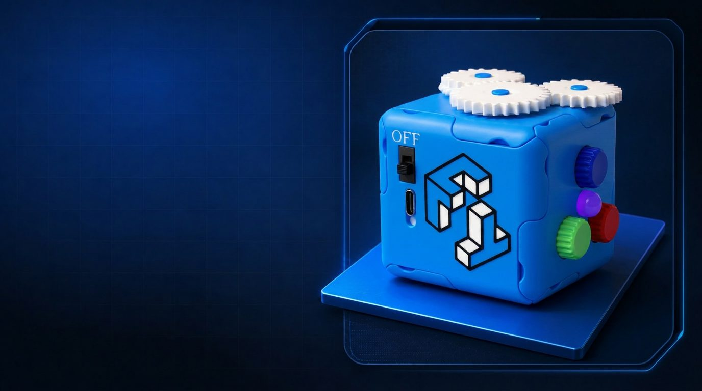
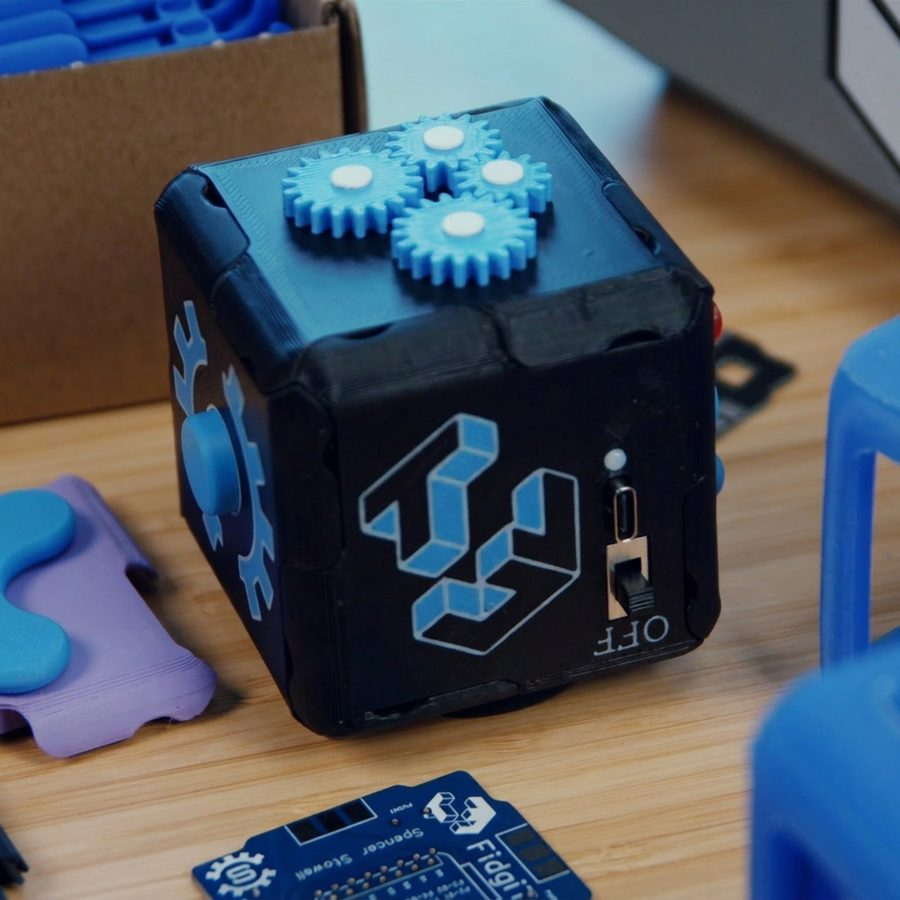
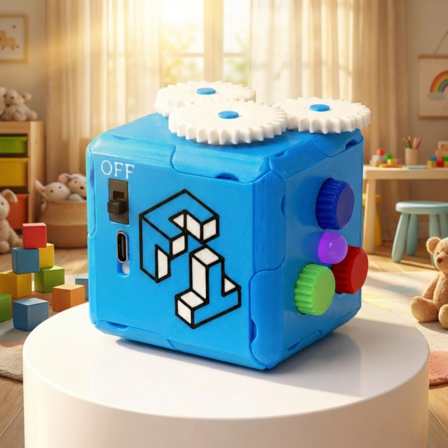
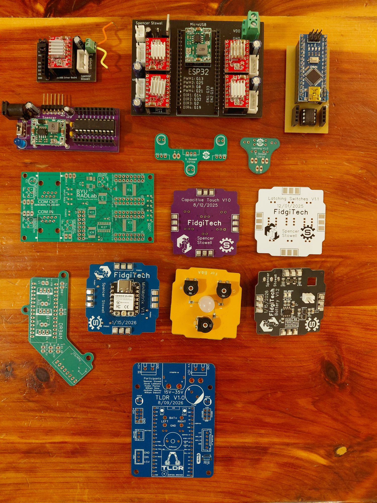

Personal project / Venture
FidgiTech
A modular sensory-fidget system that combines mechanical and electrical faces in a reconfigurable physical product.
- Modular physical-interface design
- Mechanical and electrical prototyping
- User-centered product iteration
- Product validation and feedback synthesis
- Manufacturing and commercialization thinking
Founder-led product development
Modular mechanical and electrical system
Iterative prototypes and user feedback
Project description
A product system, not a single toy.
FidgiTech translates a sensory-engagement insight into a modular physical system. Its swappable faces explore mechanical and electrical interactions—including gears, mazes, sliders, buttons, lights, knobs, and motors—within a common cube interface.
The patent-pending interface supports interchangeable modules with mechanical and electrical connections. As founder and product development engineer, I led concept development, mechanical and electrical architecture, prototyping, integration, and early design-for-manufacturing work.
Recognition
A product honored by its community.
FidgiTech received first place at BYU’s 2026 Student Innovator of the Year competition. I was the first solo founder to win the competition. An earlier iteration received honorable mention in 2025.
Electrical prototyping
Boards behind the modules.
I designed the FidgiTech module boards myself. They appear here among every PCB I’ve designed, arranged roughly chronologically.
